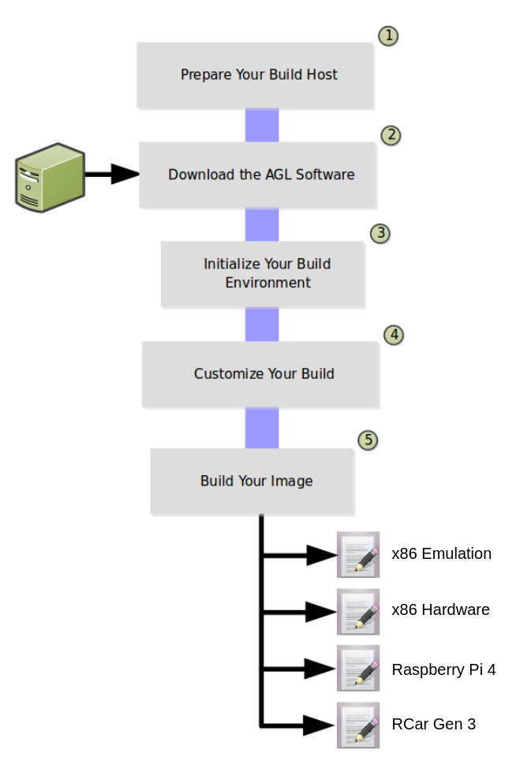

The AGL image development workflow consists of setting up the system (i.e. the build host) that builds the image and finishes with using the Yocto Project to create an image targeted towards specific hardware.
The following figure and list overview the AGL image development process. You can learn about the steps in the process by reading through the remaining sections.
NOTE: This procedure uses information from many other procedures in the AGL Documentation set. Links are provided when a set of steps is required that is documented elsewhere.

-
Prepare your build host to be able to use the tools needed to build your image.
-
Download the AGL software into a local Git repository on your build host.
-
Run the build environment script to initialize variables and paths needed for the build.
-
Make sure your build configuration is defined exactly how you want it for your build.
-
Use BitBake to build your image.